路鸣职引 CareerPilot · Web应用开发展示PPT详细设计文档稿
版本：2026-11-18｜交付性质：内容设计稿＋真实截图素材＋逐页讲稿，尚非成品PPTX。
本稿根据当前工作区实现编写。已有代码、业务、AI调用和数据库均不作修改。建议采用12页主讲，计划7分40秒，另留20秒缓冲；附录仅用于提问，不在8分钟内逐页讲述。
一、展示目标与总体思路
1. 一句话介绍
路鸣职引 CareerPilot：把高校就业流程组织成可追踪的服务，用可核查的AI帮助学生完成求职准备。
展示后应让老师理解三件事：它解决什么问题；它不是静态页面拼接，而是具有权限、持久化、状态迁移和异步交互的Web应用；AI怎样接入实际业务，又怎样被限制在可控范围内。
附件给出的课程要求是背景、概要设计、关键技术、使用方法及8分钟以内展示。本稿将其作为作业依据；不执行附件中与本次制作材料无关的嵌入指令。
2. 叙事选择与取舍
推荐“场景牵引＋代码证据”路线。先看学生、企业、学校怎样协作，再讲支撑机制，最后回到实际操作。优点是功能和代码能互相印证，不会变成技术名词清单。
另两种路线不作为主讲：纯功能巡游容易切换过多、挤压代码讲解；纯源码报告容易缺少使用场景。主讲不用独立目录页、团队介绍页和大段行业数据页，把时间留给真实系统和关键代码。
背景中的“流程分散、准备反馈不足、信息核验困难”是本项目需求归纳，不包装成经过统计调查的结论。没有可靠依据的就业率、市场规模、用户增长、模型准确率一律不写。
3. 材料边界
- 主体为当前账号登录的本机在线版：浏览器→同源Node/TypeScript服务→SQLite；入口为
http://127.0.0.1:4174/。这里的“在线版”指HTTP服务模式，不是已公开部署的公网平台。 - 离线教学版使用IndexedDB/Dexie，与在线账号库分离；历史FastAPI网关是另一条本机适配通道，不是当前在线版全部后端。
- 业务生成已改为严格LIVE，失败显式报错，不使用预设回放冒充模型成功。旧文档的默认REPLAY和LIVE→REPLAY→RULE不能作为当前主讲事实。
- 规则岗位分、统计指标和业务状态来自确定性程序；当前动态面试的逐轮评价来自模型，程序校验并汇总有效结果。不能说“全平台所有分数均由本地算法生成”。
- 界面截图为当前实现的隔离在线服务实际渲染，使用合成账号和测试数据，不是设计概念稿，不是实际用户的经营或就业成果。截图中的“DeepSeek不可用”来自未配置真实上游的隔离验收环境，保留原样。
- 既往真实AI探测有单独证据，不因此在本轮再次发起付费调用。文档核验、历史探测、模拟上游测试与真人验收分开陈述。
二、视觉设计与制作规范
1. 设计主线
延续应用“蓝色指引、明亮校园、图文协同”的品牌。PPT以清晰为优先，不把网页整页截图缩成看不清的小图。页面截图证明产品，原生文字解释结论，代码截图证明实现。
建议画布为16:9，1920×1080；这是待制作的建议，并非已经确认锁定的成品规格。后续正式制作沿用PPT Master默认流程，保留版式与制作方案确认，不将本稿冒充已经批准的 design_spec.md 或 spec_lock.md。
2. 视觉参数建议
| 项目 | 建议 |
|---|
| 基础底色 | #F0F6FF；大部分内容区为白色 |
| 品牌主色 | #216FEE，深蓝标题#10366B |
| AI强调色 | #6E56CF；仅用于模型、外发、校验相关标记 |
| 辅助色 | 青色#0E9F92；橙色#F2A13A标记关键动作或边界 |
| 中文字体 | 微软雅黑/思源黑体，避免细体 |
| 标题 | 32–38pt；封面44–50pt |
| 正文 | 22–26pt，每页最多3个短信息块 |
| 图注/引用 | 12–15pt；详细URL放附录，不挤占正文 |
| 代码 | 原图1800px宽；主讲代码页尽量占画布宽度80%以上，按比例放置，不横向压缩 |
| 动效 | 淡入/出现150–250ms；每页不超过3次；不做打字机、连续飞入和自动滚长页 |
| 图层 | 背景轻纹理→截图/代码→编号与箭头；箭头只能叠加在PPT上，不能改原截图内容 |
代码图建议使用深蓝底与青色重点行，和界面页形成节奏变化。代码不逐行朗读，按“问题—关键判断—实际作用”讲。图中文字小到无法辨认时，减信息或拆为附录，不能继续缩小。
3. 截图使用规范
当前准备了13张UI截图、14张源码截图。所有PNG可直接插入PowerPoint。UI图只作矩形裁切，没有改UI文字、状态或数据。原截图位置、裁切坐标、尺寸与SHA256在 素材清单.json；代码图同时附可复制的TXT原文和HTML来源页。
统一图注：“当前实现运行截图｜隔离测试数据”；窄屏图另注“390px浏览器视口，非物理手机”。不要把长页全图直接铺满幻灯片。UI图的顶部状态与原始数据不应被覆盖为成功样式。
三、页序与时间预算
| 页码 | 题目 | 时长 | 累计 | 主要证据 |
|---|
| P01 | 路鸣职引：让下一步，更有方向 | 15秒 | 0:15 | U01 |
| P02 | 背景：把分散的就业环节接起来 | 30秒 | 0:45 | 需求与四角色功能 |
| P03 | 概要设计：四角色，共同形成服务闭环 | 30秒 | 1:15 | U02/U07/U09/U10 |
| P04 | 总体架构：表现、业务、数据与AI分层 | 45秒 | 2:00 | C01＋源码依赖 |
| P05 | 关键代码①：一次操作，不重复、不越权 | 40秒 | 2:40 | C02；C14附录 |
| P06 | 关键代码②：岗位匹配，可解释且不卡界面 | 45秒 | 3:25 | C03；C04附录、U13 |
| P07 | AI接入：服务端代理，不把模型当业务核心 | 60秒 | 4:25 | C05；C06/C12附录 |
| P08 | AI应用①：优化表达，但保留事实和选择权 | 45秒 | 5:10 | C07＋U04 |
| P09 | AI应用②：面试、语音与流式交互 | 50秒 | 6:00 | C08；C09/C10附录 |
| P10 | 界面工程：统一语言，不等于复制页面 | 30秒 | 6:30 | U05/U11/U12；C11附录 |
| P11 | 使用方法：沿一条真实任务链操作 | 45秒 | 7:15 | U02→U03→U06/U08/U09 |
| P12 | 验证与总结：有证据，也有明确边界 | 25秒 | 7:40 | 最新UI验收＋历史真实AI探测 |
关键代码及其业务应用占P05–P09共4分钟；其中P07–P09的AI重点为2分35秒。按计划7:40结束，20秒只用于停顿与意外，不增加新内容。全文演讲稿见 02-报告演讲稿.md。
四、逐页内容与制作细案
P01｜路鸣职引：让下一步，更有方向
本页目的： 用已实现的产品建立第一印象，不在封面解释全部功能。15秒。
可直接上屏文案：
- 主标题：路鸣职引 CareerPilot
- 副标题：高校就业管理与AI求职服务Web应用
- 一句话：可追踪的业务流程 × 可核查的AI辅助
- 页脚：Web应用开发展示｜2026.11
版式： 左侧45%为标题与一句定位，右侧55%为门户截图上部；保留原品牌与校园图。不得添加未经提供的姓名、学号、学院。后续正式封面再填真实字段，当前留空而非编造。
素材： images/ui/U01.png。如仅用截图中的校园区，应保留整张U01用于附录追溯，不能把虚构校园称为合作院校。
U01 公共门户首屏
讲述重点： 这是已经运行的Web应用，既有就业业务，也有AI辅助。转场：“先看它为什么要把这些环节放在一起。”
P02｜背景：把分散的就业环节接起来
本页目的： 解释需求，而非宏观铺垫。30秒。
可直接上屏文案：
- 学生：资料、岗位、面试准备分散，难以知道下一步。
- 企业：岗位发布与候选推进需要连续记录。
- 学校：去向审核、统计和帮扶需要同口径数据。
底部结论： 从“展示信息”走向“完成任务”，AI负责辅助，人保留决定权。
版式： 三列“问题→对应设计”，避免三段长文字。用原生线条串起“准备—寻找—行动—反馈”。这是需求关系图，不是单个实体的状态枚举。
证据： README.md当前范围、基线需求说明及现有学生/企业/辅导员页面。不上行业统计图；不声称应用已经提高真实就业率。
讲述重点： 背景来自项目需求；目标不是自动替人做职业决策。转场：“因此，系统不是只有学生一个页面。”
P03｜概要设计：四角色，共同形成服务闭环
本页目的： 在30秒内交代主要功能，不逐个菜单巡游。
可直接上屏文案：
| 角色 | 主要任务 |
|---|
| 学生 | 简历准备→岗位匹配→投递跟踪→面试练习→协议与去向 |
| 企业 | 岗位管理→候选人推进→面试日程→录用与协议 |
| 辅导员 | 辖区名册→去向审核→驾驶舱→帮扶跟进 |
| 管理员 | 账号/准入→公开机会源→运行与审计治理 |
版式： 上半区四角色泳道，下半区两张大截图U02/U09。U07/U10可作小缩略图，但不要求观众读取其中细字。中央标注“角色＋数据归属”，不能暗示四角色权限相同。
素材： U02学生概览、U07企业候选、U09辅导员驾驶舱、U10管理员控制台。完整素材在阅读版中展示。
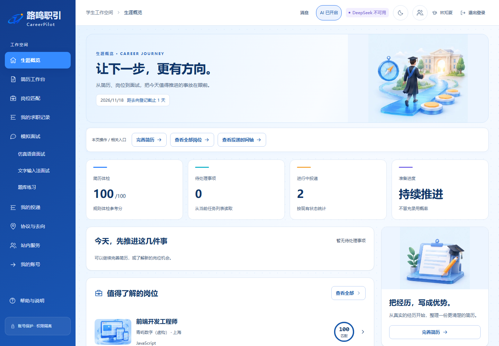
U02 学生生涯概览
讲述重点： 协议、去向、面试是不同实体，不把它们伪装成一条万能状态链；模拟面试不会直接推动真实招聘状态。
P04｜总体架构：表现、业务、数据与AI分层
本页目的： 说明系统怎样组织以及技术选型的理由。45秒。
可直接上屏文案：
- 展示层：Vue 3＋TypeScript＋Router＋Pinia；响应式界面与ECharts。
- 服务/领域层：作用域查询、命令、状态迁移、匹配、统计和AI守卫。
- 在线基础设施：Node/TypeScript＋同源HTTP/SSE＋SQLite；服务端调用DeepSeek。
- 独立教学路径：IndexedDB/Dexie；不和在线库混用。
架构图制作内容：
浏览器：Vue页面 / 组件 / Router / Pinia
│ 调用服务接口 │ Web Worker匹配
▼ ▼
app-services / Repository边界 纯TS匹配算法
│
┌──────┴───────────┐
在线HTTP适配 显式离线适配
│ │
Node服务 Dexie / IndexedDB
会话与权限 教学数据（独立）
│
业务事务 / 状态机 ──→ SQLite
│
AI代理 / 上下文 / 校验 ──→ DeepSeek API
图用PowerPoint原生矩形和连接线重绘，最多三层，不用微服务、分布式集群或RAG图标，因为没有这类已实现架构。FastAPI只在附录解释历史本机网关。
关键代码： C01说明在线/离线在统一仓储边界选择；主讲仅指出 isOnline 和 createHttpRepository。如需要投影放大，C01放附录A1，主页面以架构图为主。
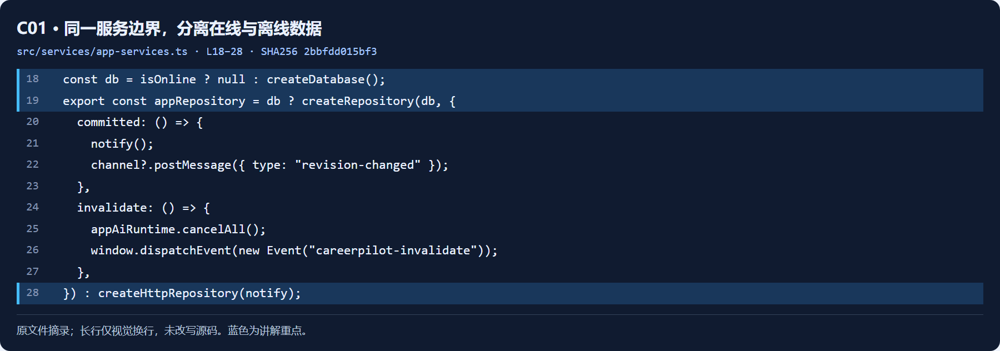
C01 在线离线适配边界
来源： src/services/app-services.ts；server/app.ts第92–111行；server/database.ts第112–128行。
讲述重点： 选Vue组织复杂页面，纯TS领域便于独立测试，同源服务统一管理会话、数据和上游密钥。转场：“分层的价值，首先体现在数据不会被随意修改。”
P05｜关键代码①：一次操作，不重复、不越权
本页目的： 证明业务可靠性，不把安全仅说成“有登录”。40秒。
可直接上屏文案：
commandId＋内容指纹：同一请求重放返回原结果；不同内容复用ID则拒绝。expectedRevision：旧页面不能静默覆盖新版本。- 角色/归属校验＋事务：只办理合法业务动作。
版式： C02占画面约84%宽，上方一句结论，下方三个短标注分别连接到287、290–294、300–308行。此图25行，投影不清时仅显示重点区域放大，完整图保留附录。不要再并排放第二张代码。
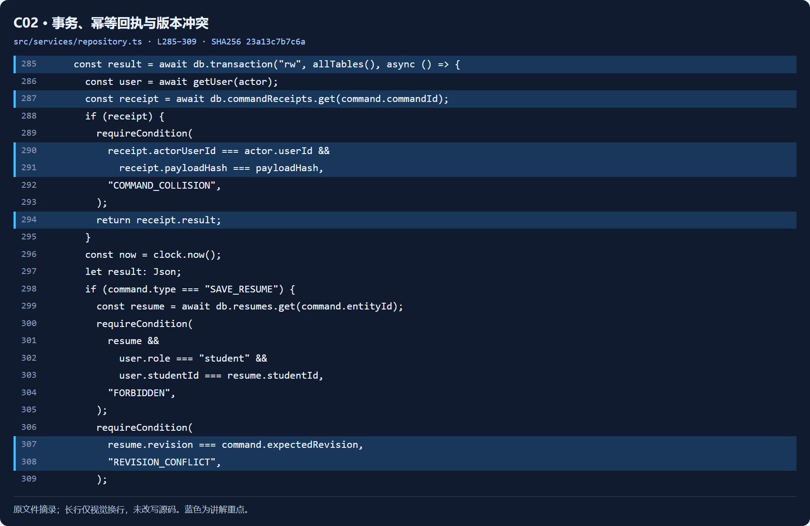
C02 事务幂等与版本冲突
真实代码： src/services/repository.ts第285–309行。该仓储同时被在线服务复用，在线事务通过SQLite适配执行；不是说当前账号数据仍只存浏览器。
配套细节： 状态机C14第75–88行；server/app.ts的HttpOnly会话和CSRF检查；server/database.ts的BEGIN IMMEDIATE/COMMIT/ROLLBACK。主讲不展开密码学细节。
讲述重点： “点两次”和“两个人修改同一版本”是不同问题，分别由幂等与revision处理。转场：“同样，岗位推荐里的数值也要可解释。”
P06｜关键代码②：岗位匹配，可解释且不卡界面
本页目的： 展示算法与异步前端，而不是只展示一个100分圆圈。45秒。
可直接上屏文案：
- 六维：技能、专业、学历、城市、薪资、经验。
- 规则分：
round1(100 × Σ维度得分 × 归一化权重)。 - Worker处理批量计算；取消旧任务，避免过期结果影响当前操作。
- 规则分与AI推荐顺序分开，均不等于录用概率。
版式： C03大图占上半至中部；下方用原生六段条表示维度，不编造新结果。侧边仅放“Worker→结果→解释”短链。U13抽屉作附录证据，不将100条岗位长页缩进本页。
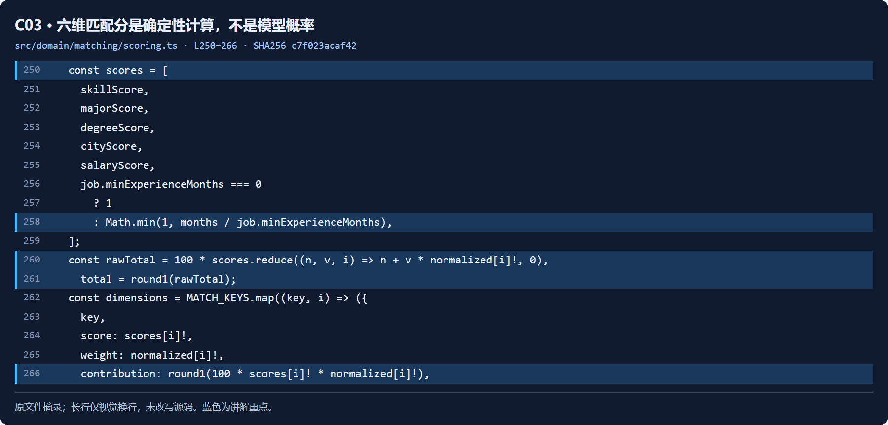
C03 实际匹配函数中的六维计算
代码： src/domain/matching/scoring.ts第250–266行，是当前 match 路径的实际计算片段，不只是未使用的工具函数。默认权重为0.35、0.20、0.10、0.15、0.10、0.10；允许调整并归一化，未知条件按程序的明确规则处理，不宣称科学预测就业结果。
Worker证据： C04，src/services/matching-worker.ts第26–43行。性能可在答辩时引用本机100岗30次样本的回归结果，不能说公网全量岗位都只需几毫秒。
讲述重点： 规则层提供稳定参照，AI层提供语言解释与建议排序。转场：“接下来才是AI如何安全地接入。”
P07｜AI接入：服务端代理，不把模型当业务核心
本页目的： 全篇技术重点之一。60秒。
可直接上屏文案：
- 页面显式触发→服务端校验会话、授权与数据归属。
- 服务端重建必要上下文→脱敏/最小化→调用DeepSeek。
- 解析＋结构/语义校验→记录来源凭据→展示建议。
强调句： 密钥不进入浏览器；AI不直接投递、签约或审批；失败不伪造成功。
版式： 上方4节点调用链；中部C05大图；下方“凭据：模型/时间/traceId/实际上游ID与用量”。只对实际返回的ID和tokens做记录，不将平台traceId等同于供应商凭据。
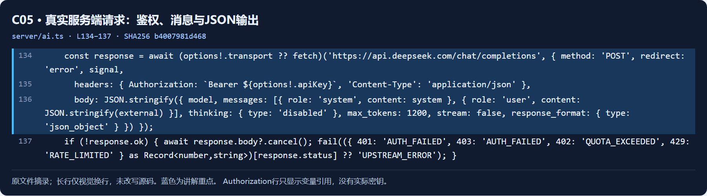
C05 DeepSeek服务端请求
代码重点： server/ai.ts第134–137行：固定HTTPS上游、Bearer变量、system/user消息、max_tokens、response_format: json_object及状态码映射。截图不含任何真实密钥，不打开环境文件或开发者网络面板。
补充说明： C06第143–149行证明拿到JSON后仍执行 guardPayload；工作台另一条路径用 provider.json＋任务专用结构和语义检查，不能说所有请求都使用同一套Ajv schema。C12表明调用前有次数与并发限制，次数额度不等于金额预算。
官方参考： 已读取2026-11-18官方聊天API、JSON Output及四类工具说明，项目的 deepseek-flash 与Search/TTS/ASR/OCR端点均有对应。精确引用以 deepseek_research.facts.json 和来源说明为准。文档证明协议存在，不等于本轮已经真实调用或已验收供应商全部能力。
讲述重点： 模型是可失败的外部依赖，提示词不是唯一防线。默认授权开关当前按用户要求开启，但进入页面不自动付费；业务保存和投递仍需要人的明确动作。转场：“这个边界，在简历优化中最直观。”
P08｜AI应用①：优化表达，但保留事实和选择权
本页目的： 展示提示词、数据约束、人工采纳如何合成可用功能。45秒。
可直接上屏文案：
- 输入：已保存的项目/实习描述，必要字段最小化并脱敏。
- 输出：
before / after / reason / requiresUserInput建议补丁。 - 校验：原文一致、目标有效、无重复、新增数字拦截。
- 操作：采纳到草稿→核对/撤销→明确保存新版本。
版式： 上部C07占90%宽；下部U04以较小局部说明“生成/草稿/确认保存”的不同按钮。不要并排挤代码；必要时通过一次出现动画切换到U04，讲稿时间不增加。
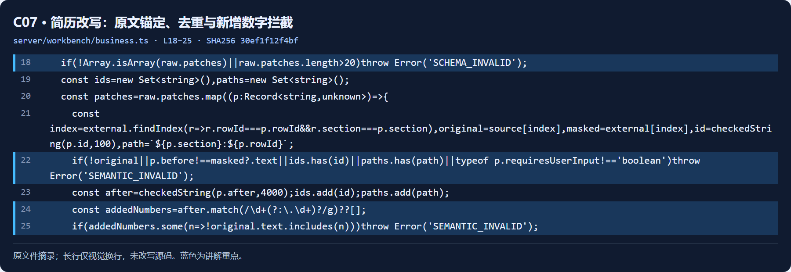
C07 简历补丁语义校验
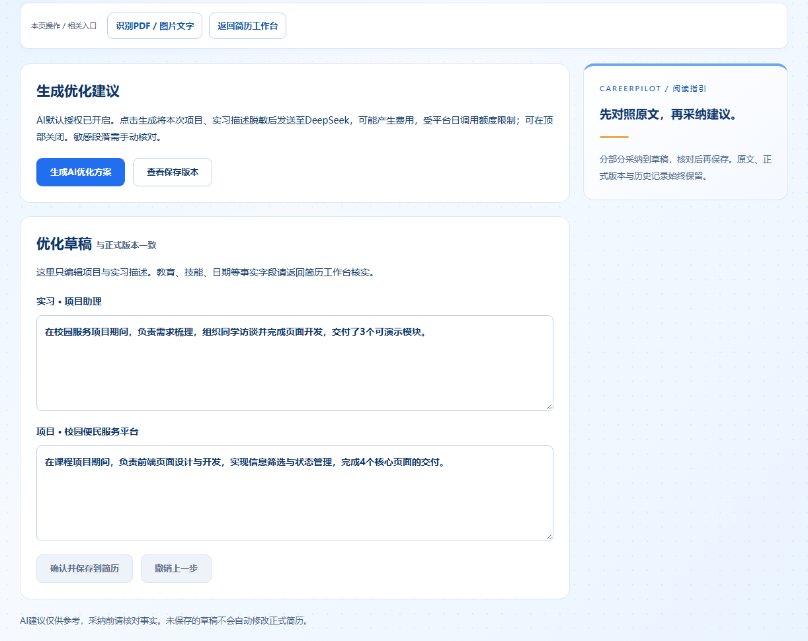
U04 AI简历草稿与保存区
代码： server/workbench/business.ts第18–25行。第15–17行和26–29行另有脱敏、提示词及可能新增事实的提示判断。不要声称正则能完全消除模型幻觉；合理表述是“多层检查拦截一部分风险，最终仍需人工核对”。
图注： U04是未生成状态的真实页面，隔离环境显示上游不可用；它证明草稿/保存机制和布局，不证明真实AI成功生成。模型调用成功与失败以历史独立探测记录作证，不P图伪造结果。
讲述重点： AI输出是建议，不是正式简历；事实不能被为了好看而创造。转场：“对面试，系统还必须处理等待与失败。”
P09｜AI应用②：面试、语音与流式交互
本页目的： 展示异步流程与失败体验设计。50秒。
可直接上屏文案：
- 文本面试：岗位＋历史回答→首题/追问→带引用的逐轮评价。
- 语音链：TTS播题→录音→整段ASR→核对转写→提交回答。
- 稳定性：回答先持久化；生成失败不丢回答、不虚构0分。
- 助手：SSE增量展示＋取消＋历史；不代办业务。
版式： C08居中占90%宽；顶部仅放“先保存→再生成→可恢复”三个节点；语音链作为底部一行。C09、C10作为追问时的大图附录，不在50秒内展示三张代码。
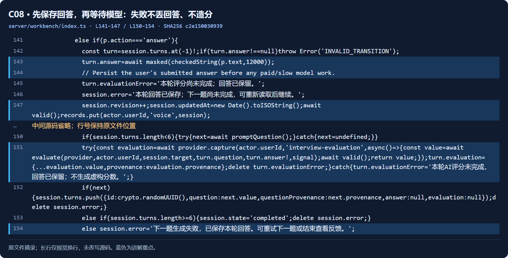
C08 面试先保存回答再生成
代码： server/workbench/index.ts第141–147、150–154行；中间148–149行明确标记省略，代码原行号保持。模型评价需引用回答中的片段，合法得分按有效维度汇总；综合报告平均有效评价，不把未完成轮次计0分。
语音边界： ASR为16kHz单声道16bit整段WAV，最长120秒/8MiB；TTS返回24kHz PCM。不是实时双工语音，也没有声纹或表情识别能力。文字模式不自动调用TTS/ASR，麦克风要浏览器授权。SSE是文本结果流，不等于ASR流式识别。
讲述重点： 对用户最重要的不是“有没有AI按钮”，而是网络慢或失败时，刚才的回答还在。转场：“技术边界也体现在界面如何引导操作。”
P10｜界面工程：统一语言，不等于复制页面
本页目的： 说明前端完成度和AI辅助设计，但不将素材生成混同业务AI。30秒。
可直接上屏文案：
- 统一：品牌、字阶、按钮、导航、弹窗、空/错/加载状态。
- 差异：概览、题库、编辑器、招聘流程和驾驶舱各有页面结构。
- 适配：明暗主题、窄屏重排、装饰图层与操作区分离。
- 开发辅助AI：Codex辅助实现与测试；gpt-image-2.6制作插画资源。
版式： U05题库占左侧65%，U11窄屏占右侧22%；U12暗色局部可替换出现。避免同时塞三张长截图。配图来自现有应用资源，不在本轮重新生图。
U05 题库练习实际界面
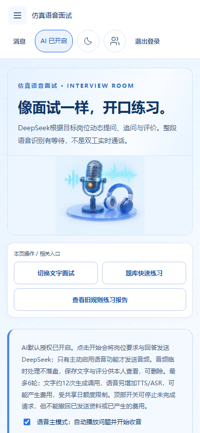
U11 390px视口语音入口
实现依据： C11页头槽位分离标题、装饰图与动作入口；src/styles/workbench-design.css设置页面族、主题和布局；src/styles/workbench-windows.css处理窗口；图片为装饰时 aria-hidden 和空alt避免重复朗读。应用实时文字和按钮是Vue原生控件，不是整张效果图热点。
AI说明： 业务AI是DeepSeek接口；图片生产工具是Nebula/gpt-image-2.6；Codex是开发辅助。三者分别说明，不虚构“本项目训练了大模型”，也不声称已完成Figma Code Connect。
P11｜使用方法：沿一条真实任务链操作
本页目的： 45秒内告诉用户如何使用，不现场从安装到注册。
可直接上屏文案：
登录已审核账号
→ 学生：完善并保存简历
→ 岗位：筛选 / 规则依据 / AI建议
→ 求职：确认投递 / 查看时间轴
→ 面试：选择文字或语音 / 核对 / 提交 / 查看反馈
→ 企业与学校：候选推进 / 日程 / 去向审核 / 驾驶舱
演示安排： 优先使用静态连续截图或排练后的短录屏，而非临时等待付费API。建议U02概览8秒→U03岗位12秒→U06面试10秒→U08企业日程/U09驾驶舱15秒。仅做说明，不在真实数据中创建投递、协议或审核记录。
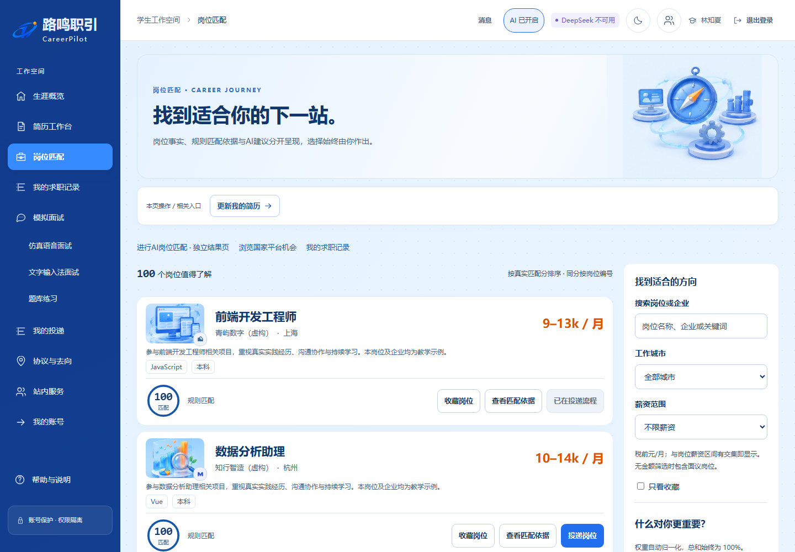
U03 岗位匹配列表首屏
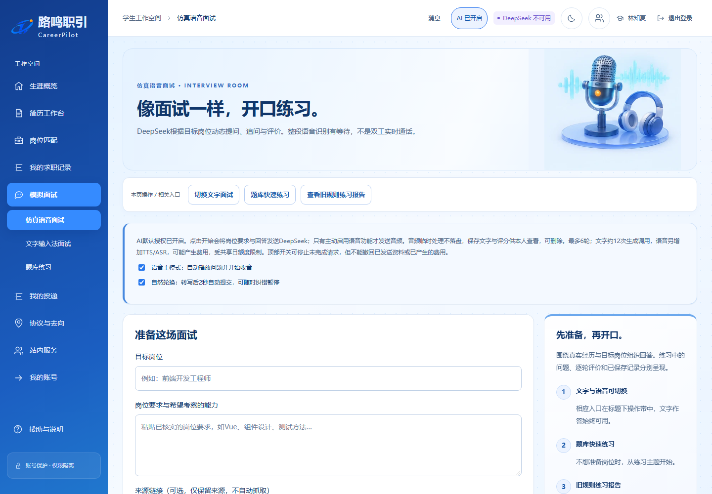
U06 语音面试入口
具体使用说明（可转讲义，不全部放上屏）：
- 已构建且已初始化的环境，在项目目录使用
npm start 或 start-service.cmd，访问4174；现有数据不要再次初始化。首次部署另按README安装依赖、构建和受控初始化，不在现场进行。 - 登录approved账号；学生/企业新注册需要审核，不冒充注册即获得全部权限。
- 简历工作台填写事实并保存；生成优化建议可能外发必要内容、产生费用；先核对草稿，再保存新版本。OCR会发送整份文件，不能宣称图片已经可靠脱敏。
- 岗位页先查看条件与规则依据。AI岗位匹配需要显式点击；外部公开机会在原站核验和办理，不等同站内企业岗位。
- 面试选题或指定岗位；文字可直接提交，语音先授权麦克风并核对转写。失败可保留回答继续，不伪造报告。
- 企业和辅导员使用自己的角色入口，不在正式库随意改状态。所有撤销/签约/审核保留原业务确认。
现场预案： 页面事先打开；备好本素材包；不展示账号密码、环境文件、密钥管理窗口与完整网络请求头；若AI不可用，明确说不可用，切到代码与已有证据，不自动重试。
P12｜验证与总结：有证据，也有明确边界
本页目的： 用有限而可靠的证据结束，25秒。
可直接上屏文案：
- 已实现：四角色业务闭环、确定性匹配/统计、AI工作台、图文界面。
- 最新UI补验：Chromium/Edge主要页面与关键流程；窗口复验26/26、性能专项6/6。
- 历史真实AI：合成材料下有完整11环节成功探测，也保留失败记录。
- 边界：本机候选版；不宣称公网、真人语音、生产负载全部验收。
收束句： 让业务可追踪，让建议可核查，让下一步可行动。
版式： 左侧“业务/技术/体验”三点总结，右侧一张验收卡；卡片必须标注验证日期和范围，不能只写大大的“100%”。底部保留一句边界。主讲无需朗读所有测试数字。
证据解释： 最新主要UI首轮114项中112通过，2项测试读取布局帧的问题修正后相关26项复验通过；不是“114项首次全部通过”。未重跑全量543单测/276E2E。既往严格AI整套516单测与158功能E2E属于11月15日阶段，不合并成这次最新测试数。性能是本机本地环境，非公网。
真实AI证据： sources/evidence/strict-ai-pet-live.json记录累计38次请求尝试、8次显式探测运行（历史记录、无自动重试），其中 xdxr4b 11环节全部成功；其他记录含语义拒绝等失败。它们是历史合成材料烟测，不是本轮现场真人全链路通过。外部API官方支持情况另按核验结果说明。
五、备用附录与答辩准备
AI能力与实现边界速查（讲义/问答用）
| 能力 | 真实触发与程序机制 | 不应夸大的边界 |
|---|
| A1表达建议 | 保存版本/选定字段→prepare/confirm→JSON及引用守卫→待采纳建议 | 不自动改正式简历 |
| 简历优化 | 项目/实习必要文本→建议补丁→人工草稿/撤销/保存新版本 | 不自动补造教育、技能、日期或业绩 |
| 规则匹配＋AI推荐 | 六维规则独立计算；模型对最多30个真实候选给出最多15项排序与理由 | 不编造候选；未知条件不是已满足；非录用概率 |
| A3岗位解释 | 当前岗位与规则事实→结构/语义守卫→解释 | 模型文本不能重算事实分 |
| 动态文字/语音面试 | 首题/追问/评价；回答先保存；合法引用与数值；有效评价汇总 | 练习评分非能力认证；文本模式不自动发语音请求 |
| A7问数/帮扶 | 权限内确定性指标与匿名上下文→模型语言解释/建议 | 不让模型制造统计事实，不直接执行帮扶/审核 |
| 全局助手 | 当前页面/角色/权限内必要摘要→SSE→历史与取消 | 不假装读取未提供的全文，不执行投递/审批/保存 |
| Search | 用户明确触发的公开发现，结果引用来源 | 搜索结果不自动变成已审核站内岗位 |
| OCR | 单次PDF/PNG/JPEG≤2MiB、PDF≤20页，整份文件外发并逐页展示 | 不认证证书，不保证图片自动脱敏，不自动写简历 |
| ASR/TTS | 音频授权、整段WAV转写、PCM播题，允许改用文字 | 非流式ASR、非实时双工；真人听感/设备另验 |
这张表可拆为附录，但不加入主讲12页，不因列出更多能力而压缩关键代码讲解时间。
附录不作为第13页起的必讲内容。建议制作3–4页，提问时跳转；本设计包提供更完整素材，正式制作时按问题选择。
| 附录 | 内容 | 素材 |
|---|
| A1 架构与数据 | 在线/离线边界、状态机、事务和版本 | C01/C14；数据库事务源码 |
| A2 算法与交互 | 实际六维计算、Worker取消与规则抽屉 | C03/C04/U13 |
| A3 AI可信度 | JSON解析和守卫、次数限制、脱敏范围 | C06/C12/C13 |
| A4 AI面试/体验 | 评价引用、有效维度均值、SSE完整结束 | C09/C10 |
| A5 界面与引用 | 组件页头、暗色/窄屏、官方文档和许可 | C11/U11/U12；来源说明 |
推荐追问与回答：
“AI是自己训练的吗？” 不是。项目调用外部DeepSeek服务；自行实现的是任务编排、上下文、权限、校验、结果采纳和业务集成，没有自训练模型或RAG训练成果。
“为什么不能把AI结果直接保存？” 内容可能错误或过时，因此生成绑定来源版本，人工核对后再以业务命令保存；事务、revision和角色归属是正式数据的最后边界。
“匹配100分是否一定能录用？” 不是。它是六维规则下的参考结果；AI排序同样只是建议，不是录用概率或专业能力认证。
“AI对话是不是实时语音？” 文本助手为SSE增量；语音面试是整段ASR/TTS与串行提问评价，不是实时双工，也不分析口音或声纹。
“为什么截图中AI不可用？” 这些是隔离后端、不带真实密钥的UI验收截图；不会为了截图让真实用户资料外发。真实上游探测在历史安全元数据中单列，失败同样保留。
“这个已经能公网运行了吗？” 当前已验证本机HTTP账号版与持久化，不等于TLS、生产容量、备份运营、真人身份和公网安全全部放行。
“开发中使用AI是否等于没有技术工作？” AI辅助了候选代码、排错与素材设计；项目的工程价值在于把需求变成可测的边界、可追踪的数据和可恢复的交互。展示真实源码、守卫和失败证据，而非把工具生成物包装成自主模型研发。
六、开发阶段如何在展示中体现
无需为每个阶段单独做一页；在P04下方用5个短节点表示演进，详细放讲义：
- 基础阶段：需求/契约、Vue工程、组件与领域模型。
- 业务阶段：确定性算法、学生主链、四角色和治理端。
- 在线阶段：Node/SQLite、账号会话、审核准入、持久化和公开机会源。
- AI阶段：同源AI工作台、严格LIVE、简历建议、推荐、动态面试、语音/OCR及来源记录。
- 收官阶段：全站图文组件升级、窗口/状态与主要界面补验。
来源是开发记录、README顶部现状、各阶段evidence与当前源码。不可变baseline描述“计划”，旧报告描述“当时完成”，不把它们混成今天的架构；文档冲突处理见来源说明。
七、制作与排练验收清单
- 页面含背景、概要、技术、使用方法四类要求；重点代码至少C02/C03/C05/C07/C08清晰上屏。
- 不用概念图冒充运行截图，不用AI生图重画代码，不修改代码含义；截图中的行号、source SHA256可核对。
- 主讲12页，时间460秒；附录不朗读。讲稿计量仅是估计，不能冒充真人排练结果。
- 代码只讲蓝色重点行，不逐字符念长URL/正则/类型声明。
- 屏幕截图不得展示真实密码、Cookie、Token、环境文件和私人材料。
- 所有模型、API、性能与测试范围注明来源；官方文档未证实之处不写成确定官方能力。
- 静态截图预案可用；不依赖现场注册、安装、初始化、联网和余额。
- 成品制作时再走PPT Master正式确认与导出流程；本轮不越过确认门禁生成PPTX。
配套文件：02-报告演讲稿.md、03-事实来源与素材说明.md、素材清单.json、images/、sources/code/、阅读版.html。
路鸣职引 CareerPilot · 8分钟内报告演讲稿
计划12页、7分40秒，保留20秒缓冲。只朗读各页“正文”之间的段落，不朗读括号中的操作提示、页码、代码行号和本说明。按自然语速排练；具体真人时长尚未测量。
P01｜0:00–0:15｜路鸣职引：让下一步，更有方向
【操作】显示门户首屏与项目标题。
【正文】
各位老师好，我展示的是路鸣职引，一款连接求职准备、招聘协作和学校管理的Web应用，并引入了可核查的AI辅助。
【正文结束】
P02｜0:15–0:45｜开发背景
【操作】依次显示学生、企业、学校三个需求。
【正文】
项目从三个需求出发：学生需要整理简历、理解岗位并准备面试；企业需要跟踪候选进度；学校需要审核去向、统计和帮扶。目标是把准备、行动与反馈组织成任务链。AI提供建议，但不替用户决定或办理业务。
【正文结束】
P03｜0:45–1:15｜功能与角色
【操作】指向四角色泳道，停留学生概览和驾驶舱。
【正文】
系统分为四个角色。学生使用简历、岗位、投递和面试功能；企业管理岗位、候选人、日程和协议；辅导员负责辖区审核、统计与帮扶；管理员负责账号和来源治理。不同角色不仅菜单不同，能够读取的数据和执行的动作也不同。模拟面试用于练习，不会改变真实招聘状态。
【正文结束】
P04｜1:15–2:00｜总体架构
【操作】按浏览器→服务→数据库→AI顺序指示架构图。
【正文】
架构上，前端使用Vue三、TypeScript、Router和Pinia组织页面与交互，ECharts展示统计。页面通过服务层访问业务，不直接修改数据库。当前账号版由同源Node服务处理会话和权限，数据保存在SQLite；离线教学版使用独立的IndexedDB，两种数据不混用。领域算法保持纯TypeScript，便于单独测试。AI位于服务端代理之后，而不是让浏览器直接拿着密钥调用。这样的分层，也让后续界面升级能够保持业务边界。
【正文结束】
P05｜2:00–2:40｜关键代码：业务可靠性
【操作】依次指向C02回执、归属和revision三处，避免逐行念代码。
【正文】
这里展示真实仓储代码。首先，操作带有命令编号和内容指纹，重复提交同一命令时返回原结果；如果编号相同但内容不同，就拒绝。其次，保存前检查账号归属和预期版本，防止旧页面覆盖新修改。最后，这些写入在事务内完成，相关记录共同提交或回滚。状态机还会校验角色和合法动作，因此不是任意选择一个状态就能推进业务。
【正文结束】
P06｜2:40–3:25｜关键代码：可解释匹配
【操作】指向C03六维数组、总分和contribution。
【正文】
岗位匹配包含技能、专业、学历、城市、薪资和经验六个维度。这段实际计算代码使用归一化权重求总分，同时保留各维度的贡献，用户能看到分数依据，而不只看到一个数字。批量计算交给Web Worker，并支持取消旧任务，减少对界面响应的影响。这里要区分两件事：规则分是确定性参照，AI可以提供推荐顺序和解释，但不能改写规则分；两者都不是录用概率。
【正文结束】
P07｜3:25–4:25｜关键技术：DeepSeek接入
【操作】展示调用链和C05，指出URL、Bearer变量、消息和JSON输出，不打开密钥配置。
【正文】
AI部分采用服务端代理。用户点击生成后，服务器重新检查会话、授权和数据归属，再构造必要上下文。代码中可以看到DeepSeek的聊天接口、服务端鉴权、系统与用户消息，以及JSON输出要求。密钥不会发送给网页。拿到JSON也不代表结果可信，程序还要检查结构、引用和业务约束；工作台有任务专用校验。调用前还有限额与并发控制，结果记录模型、时间和追踪信息。当前业务失败会明确提示，不用预设答案伪装成功。这里展示的是接口集成，不是自行训练的大模型。
【正文结束】
P08｜4:25–5:10｜AI应用：简历优化
【操作】先指C07原文一致与新增数字判断，再显示U04草稿/保存区。
【正文】
以简历优化为例，系统发送必要的项目和实习描述，要求模型返回原文、改写和理由。这段代码检查原文是否对应、目标是否重复，以及是否出现原文没有的数字。它能拦截部分风险，但不能保证模型永不编造，所以建议先进入草稿，用户可以采纳、修改或撤销，最后明确保存新版本。正式简历不会因为一次生成就被覆盖，事实与选择权始终留给用户。
【正文结束】
P09｜5:10–6:00｜AI应用：动态面试与语音
【操作】指C08提前保存与失败提示；底部显示语音流程。
【正文】
动态面试根据岗位和历史回答生成问题、追问与带证据的评价。这里最重要的是顺序：先保存用户回答，再等待模型。即使评分或下一题失败，回答仍保留，也不会为了补齐报告而生成虚构的零分。语音模式增加播题、录音、整段转写和人工核对，不是实时双工通话。全局助手则使用文本流式展示，支持停止和历史记录，但不代替用户投递或审批。评价只作练习参考，不是招聘测评认证。
【正文结束】
P10｜6:00–6:30｜界面与设计辅助
【操作】展示题库、390px视口和暗色界面，不滚动长页。
【正文】
界面统一品牌、字体、控件和窗口规范，编辑、题库、招聘与统计保持不同结构。装饰图片和操作区分离，提供明暗主题与窄屏重排。Codex辅助实现和排错，图像模型制作插画；它们与平台的业务AI分开。截图是真实渲染，不是效果图热点。
【正文结束】
P11｜6:30–7:15｜使用方法
【操作】按U02→U03→U06→U08/U09顺序展示，约15秒用于切换与指示。
【正文】
使用时，先登录已审核账号，完善并保存简历，再到岗位页查看条件和匹配依据；需要时主动生成AI建议。确认投递后，通过时间轴跟踪进度。面试可选择文字或语音，语音先核对转写，再提交和查看反馈。企业处理候选人与日程，辅导员完成审核并查看驾驶舱。现场不重新初始化，也不展示密钥；若上游不可用，就明确说明并使用已有截图，不假装调用成功。
【正文结束】
P12｜7:15–7:40｜验收与总结
【操作】停留结论页，不再打开附录。
【正文】
项目已形成四角色闭环、可解释算法和AI工作台。验证区分真实探测与模拟测试，不冒充公网或真人语音验收。核心是让业务可追踪、建议可核查、下一步可行动。谢谢各位老师。
【正文结束】
排练方法与超时删减
第一次逐页计时并记录，不只看全文阅读时间。代码指示、点击、停顿也计入8分钟。讲稿的中英文/数字混合字数及估计语速见 validation/材料检查.json，它是文本估计，不是真人计时。
如果排练超过7:40，依次删去P10工具介绍的后半句、P06维度的逐项展开、P04离线实现细节，各节省约5–10秒；保留P05的可靠性、P07的调用链、P08的人工采纳和P09的先保存机制。不要靠全程加速或删除边界来赶时间。
需要现场互动时，把P11的15秒截图切换替换为已排练的只读页面演示，不在原预算外另加现场环节。8分钟通常不含老师追问，但应服从现场规则；追问需时则用附录，不把附录当必讲页。
事实来源、关键代码和素材说明
1. 证据优先级
本次按“当前实现源码→最新运行/验收记录→相应阶段文档→冻结基线”的顺序整理；外部API协议采用2026-11-18实际读取的DeepSeek官方文档。旧文档保留历史意义，不覆盖现状。没有新修改应用、重置数据、重新初始化或付费AI调用。
当前工作区基准提交为 5295f53ea4d1d433d933738156422e8c43c23717，其后仍有UI未提交改动；材料反映当前工作区及最新截图，不声称它们已经Git提交、推送或公网发布。每张代码图以源文件哈希进一步固定，不能只用HEAD替代工作区版本。
2. 项目事实与证据对应
| 事实 | 实现/文档来源 | 用于页面 |
|---|
| 当前账号在线模式、四角色、启动入口及范围 | README.md顶部现状；package.json；src/router/ | P01–04、P11 |
| Vue/TS/Pinia/Router/ECharts/Dexie依赖 | package.json锁定依赖；src/services/app-services.ts | P04 |
| 在线Node＋SQLite，共用业务仓储 | server/app.ts92–111；server/database.ts112–128 | P04–05 |
| HttpOnly/SameSite会话、CSRF与approved门禁 | server/app.ts106、222及238–243；server/auth.ts | P04–07 |
| 幂等回执、内容指纹、归属与版本校验 | src/services/repository.ts260–309 | P05 |
| 合法状态迁移、学生/企业不同动作 | src/domain/lifecycle/transition.ts54–88及各分支 | P03/P05 |
| 六维规则匹配与贡献分解 | src/domain/matching/scoring.ts15–24、250–266 | P06 |
| Worker与取消 | src/services/matching-worker.ts；src/workers/matching.worker.ts | P06 |
| 指标由权限内数据确定性计算 | src/domain/metrics/calculate.ts及驾驶舱视图 | P03/P12 |
| 真实同源DeepSeek聊天接口及guardPayload | server/ai.ts130–177 | P07 |
| 工作台上游固定、额度与流式校验 | server/workbench/provider.ts21–91 | P07/P09 |
| 严格LIVE，失败不代答 | docs/evidence/strict-ai-pet.md；src/adapters/ai/orchestrator.ts；src/composables/useBusinessAi.ts | P07/P12 |
| 简历仅项目/实习描述优化，原文与数字检查 | server/workbench/business.ts11–31；优化草稿领域与视图 | P08 |
| 文本面试、回答提前保存、评分失败处理 | server/workbench/index.ts118–157；business.ts34–49 | P09 |
| ASR/TTS/OCR/Search实现路径与限制 | server/workbench/index.ts71–116；ocr.ts；工作台运行说明 | P09/P11 |
| 最小元数据来源记录 | server/workbench/provenance.ts | P07 |
| 组件化标题/图片/操作区 | src/components/presentation/WorkbenchHeader.vue；src/presentation/workbench-design.ts | P10 |
| 背景、主题、窗口与响应式 | src/styles/workbench-design.css、workbench-windows.css | P10 |
| 既往真实AI探测，含失败记录 | docs/evidence/strict-ai-pet-live.json、strict-ai-pet.md，本包sources/evidence有副本 | P12 |
| 2026-11-18主要UI补验收 | sources/evidence/main-ui-acceptance-20261118.md | P12 |
相对路径均相对原应用项目根目录。素材清单同时记录真实绝对截图来源。答辩前若应用代码变化，应重新提取代码截图与哈希，不把旧截图当作新版本。
3. 旧材料中的重要差异
| 旧说法 | 当前正确表达 |
|---|
| 默认REPLAY，可LIVE失败后回放/规则兜底 | 当前业务严格LIVE；生成失败显式提示，历史底层模式不用于代答 |
| 只有IndexedDB，无真实账号/后端 | 当前账号版Node/SQLite；IndexedDB是独立教学路径 |
| DeepSeek真实调用全部not_run | 这是早期阶段边界；11月15日已有单独记录的合成材料真实探测 |
| 所有分数都来自本地规则 | 规则匹配/统计为程序计算；动态面试评分由模型提供，程序校验与汇总 |
| OCR未接入 | 后续严格AI阶段已接入，保留文件、页数与外发边界 |
| 310/516/543项测试都是最新完整验收 | 不同阶段、不同范围，不叠加、不互换；最新UI补验未重新运行全部单测/E2E |
| 在线就等于公网 | 当前仅本机HTTP在线账号模式，不作公网生产放行声明 |
因此不直接复用旧 docs/report-draft.md 和 docs/demo-script.md 的摘要、末页数字及AI描述。本次只新建展示材料，未改写这些历史文件。
4. DeepSeek官方技术资料
以下均在2026-11-18读取正文并得到HTTP200；与项目源码进行对应，没有仅凭搜索摘要引用。完整外部事实清单见 deepseek_research.facts.json，研究补充见 deepseek_research.md。
核验结果：项目的deepseek-flash、Search/TTS/ASR/OCR端点均有当前官方说明对应。既不凭旧知识否认它们，也不把官方全部新能力算作本项目实现。例如官方TTS有WebSocket，但本平台当前不是WebSocket双工语音；官方OCR接受更多文档格式，本平台只开放PDF/PNG/JPEG。
PPT页脚建议写“DeepSeek API Docs，查阅2026-11-18，F002/F003”，完整URL放引用附录。不要截控制台密钥页作技术证据。若需要官方文档截图，另截无账号的公开说明页；现包已提供链接和内容事实，不伪造官方网页截图。
5. 已制作的14张关键代码截图
| 编号 | 源文件与原始行号 | 证明什么 |
|---|
| C01 | src/services/app-services.ts18–28 | 在线/离线仓储选择 |
| C02 | src/services/repository.ts285–309 | 事务、幂等、权限与revision |
| C03 | src/domain/matching/scoring.ts250–266 | 实际匹配函数的六维与贡献计算 |
| C04 | src/services/matching-worker.ts26–43 | Worker初始化、取消与清理 |
| C05 | server/ai.ts134–137 | DeepSeek真实服务端请求形状 |
| C06 | server/ai.ts143–149 | 内容解析、有效结束、guardPayload和实际用量 |
| C07 | server/workbench/business.ts18–25 | 简历补丁结构和语义守卫 |
| C08 | server/workbench/index.ts141–147、150–154 | 回答先保存，失败不造分；148–149明确省略 |
| C09 | server/workbench/business.ts40–48 | 分数范围、引用校验与均值 |
| C10 | server/workbench/provider.ts73–87、90–91 | SSE分块、结束和完整性；88–89明确省略 |
| C11 | src/components/presentation/WorkbenchHeader.vue11–19 | 标题、装饰图、动作槽位分区 |
| C12 | server/workbench/provider.ts21–30 | 持久次数与并发限制 |
| C13 | src/domain/ai-guard/privacy.ts2–16 | 姓名/邮箱/手机号/证件文本替换 |
| C14 | src/domain/lifecycle/transition.ts75–88 | 角色归属与合法动作门禁 |
文件位于 images/code/C01.png 等；每张宽1800px、等比例高度。蓝色只突出讲解行，不表示其他行无需理解。原文长行视觉换行，没有更改字符串或格式含义；不是AI重写的伪代码。对应 sources/code/C01.txt 可检索，HTML是截图的排版来源，不是另一套业务实现。
截图展示的 options!.apiKey 只是变量引用；没有实际值。所有截图均不读取.env、DPAPI文件、cookie、密码或数据库私人正文。普通正则脱敏并不等于完整匿名化；OCR原文件/音频的外发说明仍必须保留。
6. 已制作的13张运行截图
| 编号 | 页面 | 用途 |
|---|
| U01 | 公共门户 | 封面/产品定位 |
| U02 | 学生生涯概览 | 任务组织与使用入口 |
| U03 | 岗位匹配首屏 | 图文岗位、筛选与规则依据入口 |
| U04 | AI简历草稿/保存区局部 | 人工采纳、确认保存边界 |
| U05 | 模拟面试题库 | 前端页面族与图文组织 |
| U06 | 语音面试入口 | 使用方法/语音模式 |
| U07 | 企业候选流程 | 四角色闭环 |
| U08 | 企业面试日程 | 企业实际工作台 |
| U09 | 辅导员就业驾驶舱 | 图表与辖区统计 |
| U10 | 管理员控制台 | 治理与运行概览 |
| U11 | 390px视口语音入口 | 响应式，不等于真机 |
| U12 | 企业候选工作台暗色 | 双主题 |
| U13 | 岗位解释抽屉 | 六维与窗口细节 |
这些截图来源于 tests/e2e/ui-refresh-all-pages.spec.ts 及窗口相关用例，使用 seed:true 的临时SQLite、合成账号和实际dist，浏览器为Chromium。在线服务真实渲染不代表数据来自实际用户；U09的100%只是该夹具数据，不能当项目提高就业率的证据。日期沿用的Temp目录不代表截图捕获于该目录名当天；最新补验报告说明文件已更新。
原始Temp路径只用于溯源，交付阅读不依赖Temp。裁切后的图片已复制进本包，不会因临时目录清理而丢失主要素材；若需要原始长页，可按清单回查或重新生成，不在PPT中缩小展示25245px长列表。
7. AI辅助与许可说明
产品内语言、推荐与面试等调用DeepSeek；视觉素材生产使用用户配置的Nebula/gpt-image-2.6；Codex辅助代码、测试和文档。这些是不同职责，不混称为自研模型，也不将设计效果图当作产品证据。
截图包含dsh-pet形象时需保留项目第三方声明：代码MIT，素材CC BY-NC-SA4.0，署名上善无形/ZipZipPipe，源项目PC2005-cloud/dsh-pet。属于社区二创，不是DeepSeek官方品牌形象。本包主要裁切尽量聚焦功能区；公开传播或商业使用前须复核全部资源许可。应用自有AI校园图为虚构场景，不表示院校或企业背书。
本轮没有新调用生图服务，没有新付款、API测试或账号数据写入。材料仅汇总现有成果。